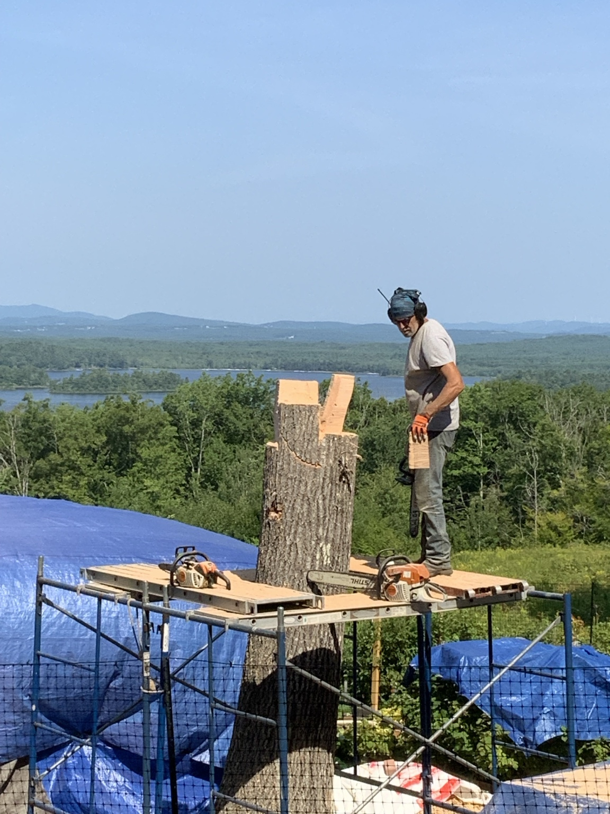

Jade Pruning Project
The actual mother jade before and after the June 29, 2026 pruning, plus the cuttings saved for propagation.
Open Jade ProjectStep-by-step photo stories from the garden and homestead.
The actual mother jade before and after the June 29, 2026 pruning, plus the cuttings saved for propagation.
Open Jade Project
A corrected photo timeline from the crowded mother plant through separation and repotting.
Open Haworthia Project
Day 1 of Dan Burns transforming the tree stump into a bald eagle. More days will be added as the carving continues.
Open Carving Project